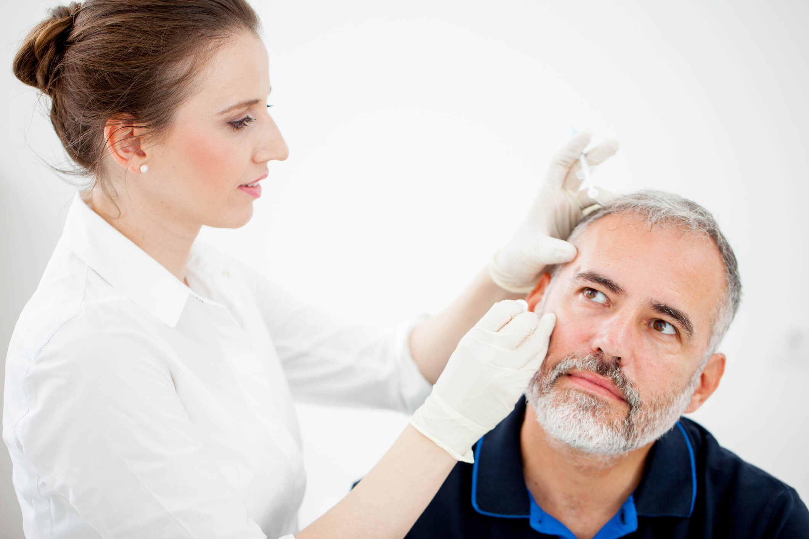

<!DOCTYPE html>
<html lang="pt-br">
<head>
    <meta charset="UTF-8">
    <meta name="viewport" content="width=device-width, initial-scale=1.0">
    <title>Dermatologia</title>
    <link rel="stylesheet" href="css/derma.css">
    </html>
    <body>
       <div class="container">
                   <div class="logo">
                       
                   </div>
           
                   <h1>DERMATOLOGIA</h1>
           
                   <p>A sua pele é o seu maior órgão e merece atenção especial! Na nossa clínica de dermatologia, oferecemos tratamentos personalizados para todas as suas necessidades. Seja para combater a acne, tratar manchas, cuidar do envelhecimento ou diagnosticar condições mais complexas, nossa equipe de dermatologistas está pronta para ajudar.
               
                       Por que escolher nossa clínica?</p>
           
                   <p> Experiência e Expertise: Contamos com profissionais altamente qualificados e atualizados nas últimas técnicas e tratamentos dermatológicos.
               
                       Abordagem Personalizada: Cada pele é única. Realizamos avaliações detalhadas para oferecer o tratamento que realmente se adapta a você.
                       
                       Tecnologia Avançada: Utilizamos equipamentos de ponta e técnicas inovadoras para garantir resultados eficazes e seguros.
                       
                       Cuidados Estéticos: Além da saúde, cuidamos da beleza da sua pele com tratamentos estéticos que rejuvenescem e iluminam.
                       
                       Agende sua consulta! Não espere mais para ter a pele que sempre desejou. Venha nos visitar e descubra como podemos transformar a sua autoestima. Porque você merece brilhar!
                       
                       
                       
                       eratura. Por isso, consultas regulares com um dermatologista podem ajudar na prevenção de doenças e no manejo de condições crônicas.</h4>
                      
           
           
           
                       O evento contará com uma série de atividades e palestras que visam expandir o horizonte dos participantes sobre os temas mais atuais na área biomédica. Entre as atividades que serão realizadas estão:
                       
                       </p>
           
                   <div class="image-section">
                       
                   </div>
           
                   <p>
           
           1. Palestras com Especialistas
           
           
           
           Diversos profissionais renomados, tanto do Brasil quanto do exterior, compartilharão seus conhecimentos em temas como biotecnologia, genética, imunologia, e diagnóstico por imagem. As palestras abordarão novas tendências e tecnologias que estão revolucionando o campo biomédico. <br> <br>
           
           
           
           2. Workshops Práticos
           
           
           
           Os participantes terão a oportunidade de participar de workshops práticos que incluirão técnicas avançadas de análises clínicas, desenvolvimento de novos biomateriais e procedimentos de biologia molecular. Esses workshops permitirão que estudantes e profissionais aprimorem suas habilidades técnicas em um ambiente interativo. <br> <br>
           
           
           
           3. Exposição de Pesquisas
           
           
           
           Pesquisadores de diversas universidades e centros de pesquisa apresentarão seus estudos mais recentes. Os temas variam desde novos tratamentos para doenças autoimunes até avanços na terapia gênica. As melhores pesquisas serão premiadas ao final do evento. <br><br>
           
           
           
           4. Feira de Inovação Tecnológica
           
           
           
           Empresas de tecnologia biomédica estarão presentes para exibir os mais recentes equipamentos e softwares utilizados no diagnóstico e tratamento de doenças. Haverá demonstrações de tecnologias de ponta, como impressão 3D para próteses e novos dispositivos de monitoramento remoto de saúde. <br> <br>
           
           
                   </p>
               </div>
           
       
   </body>
   </html>